Slide_01_Monza_LearnedDriver_FullLap_10x.gif
Slide 1: optional opening demo. Nominal 10x playback, not real time.
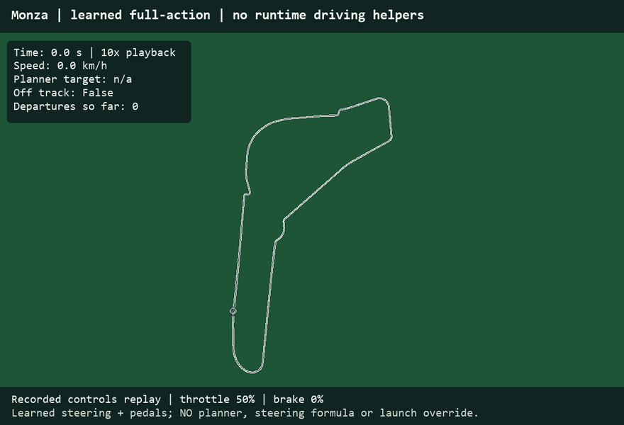
Open the latest PDF · Slide-to-file guide
Slide 1: optional opening demo. Nominal 10x playback, not real time.

Slides 4 and 7: naive learned pedals, first road departure. Rule steering and pedal cleanup remain.

Slides 4 and 8: assisted learned pedals near the same turn. Planner can override pedals.

Slides 4 and 9: learned full control, no runtime driving-rule assistance; actuator limits remain.

Slides 11 and 13: actual Silverstone learned-driver replay. Not Spa footage.

Optional full-lap transfer demo; nominal 10x playback.
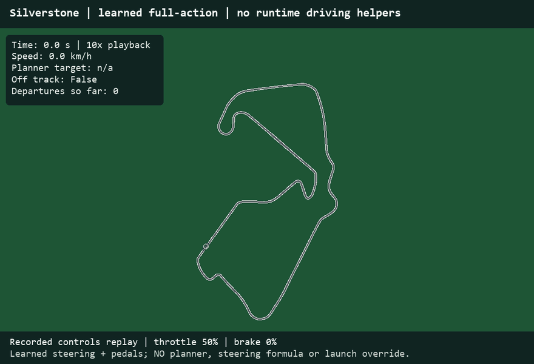
Slides 1, 4, 9: full-control driver at Monza.
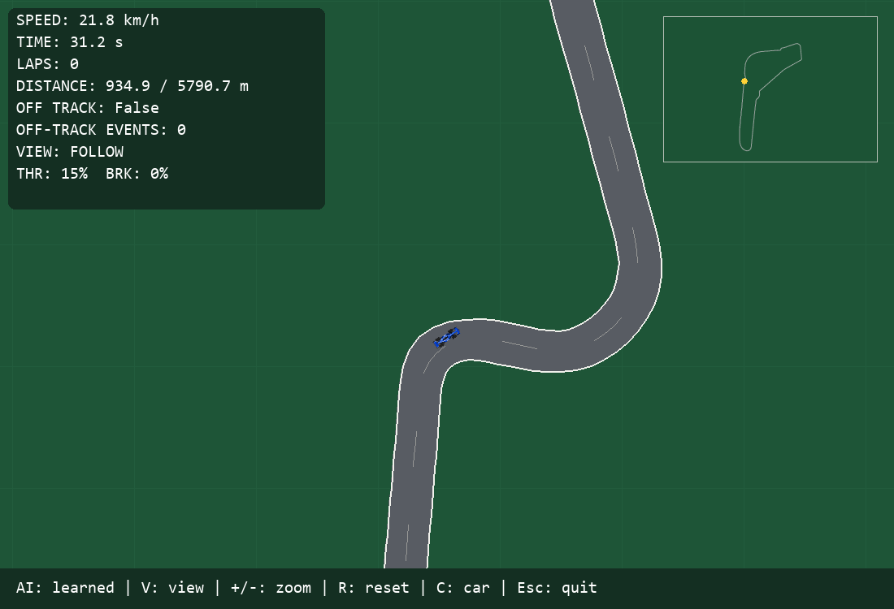
Slide 3: simulator with timing, progress and road-status display.

Slides 4 and 7: original pedal driver departure.
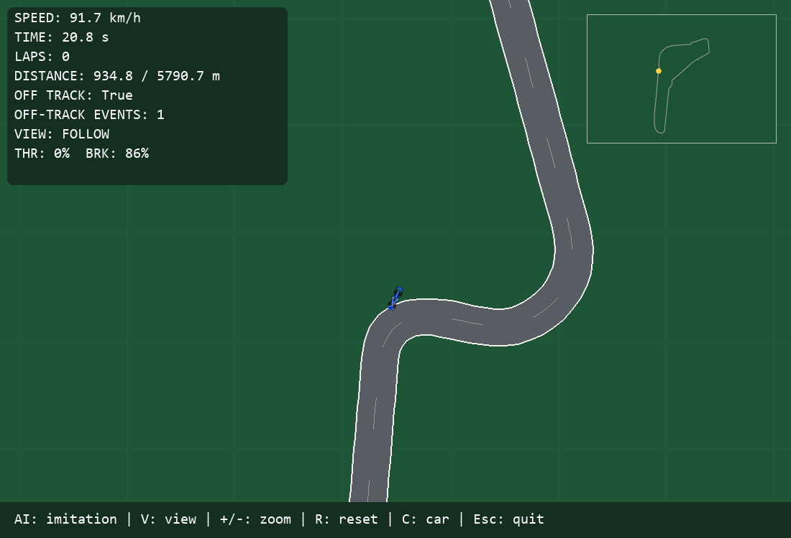
Slides 4 and 8: hybrid assisted turn.
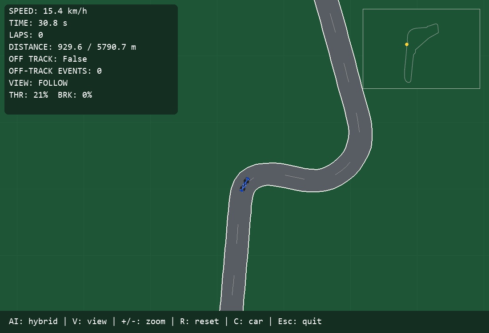
Slides 11 and 13: actual Silverstone replay.
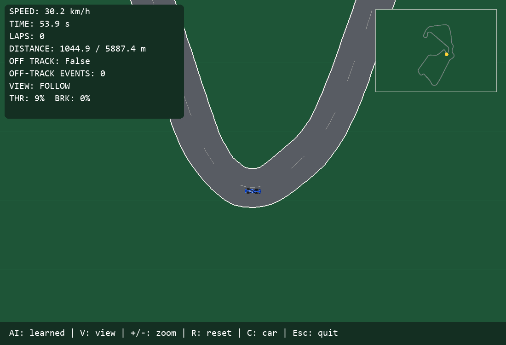
Slides 2 and 11: training circuit map, Italy.
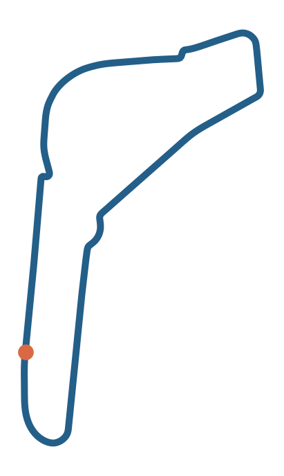
Slide 11: first transfer circuit, United Kingdom.
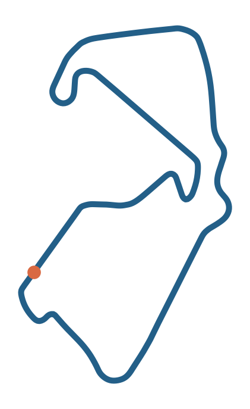
Slide 11: Spa-Francorchamps, Belgium; fresh frozen-model test.
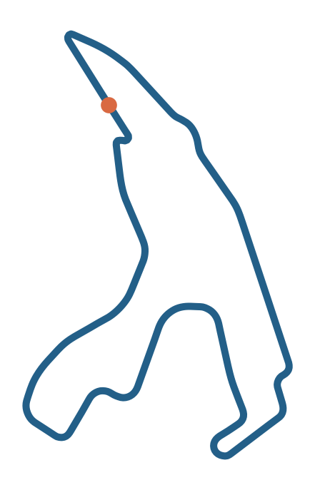
Slide 2: controlled run of shared physics, not a racing benchmark.
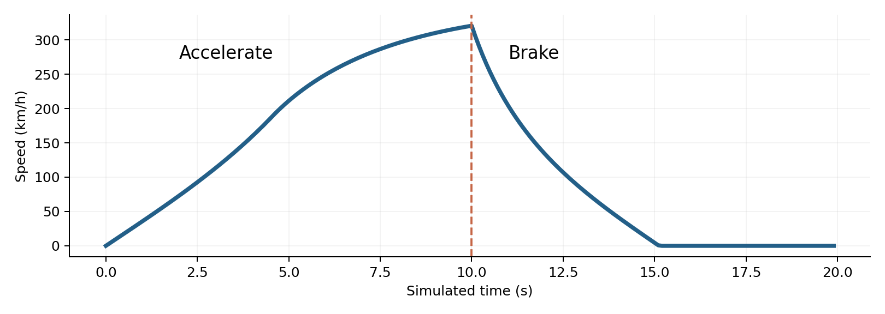
Slide 5: speed over one saved lap; explains what recorded moments represent.
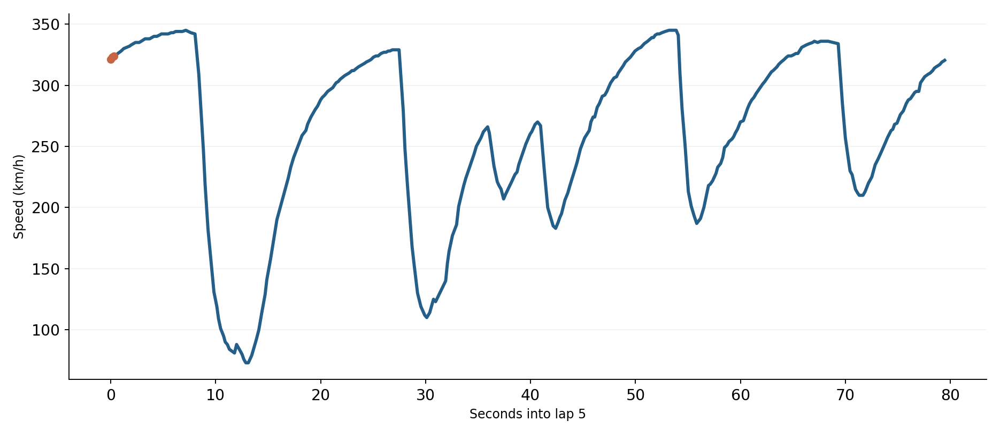
Slide 6: actual training-lap alignment output.
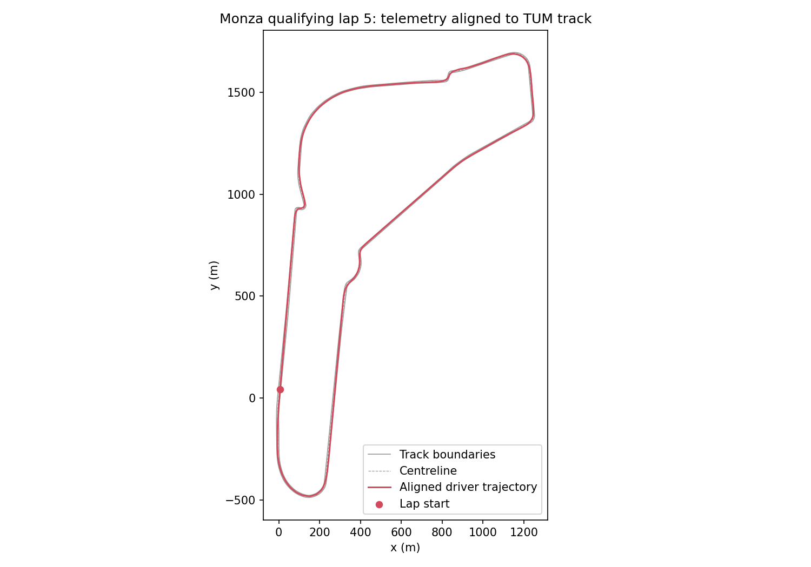
Optional historical planner-only versus original hybrid comparison; not tuned-model Spa results.